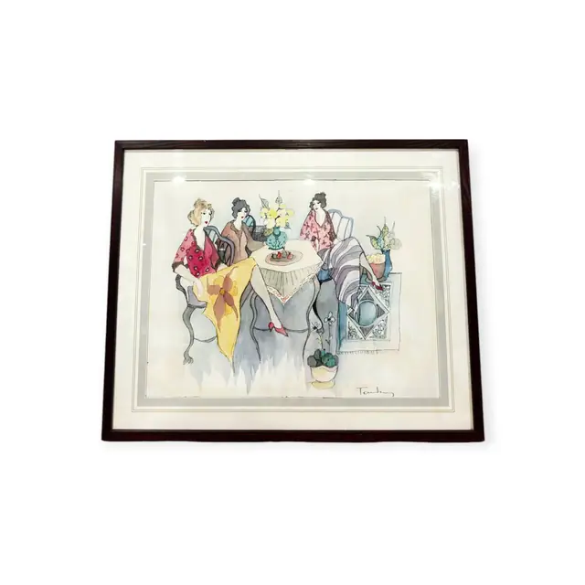
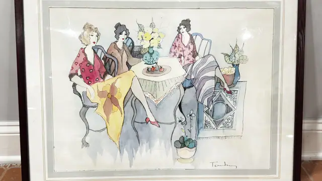
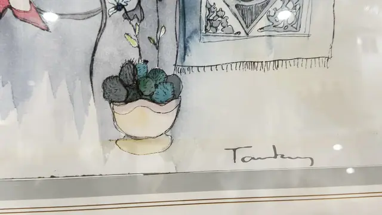
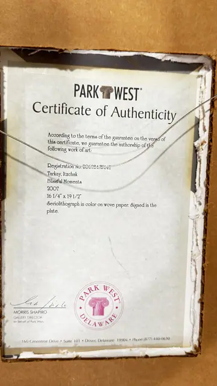
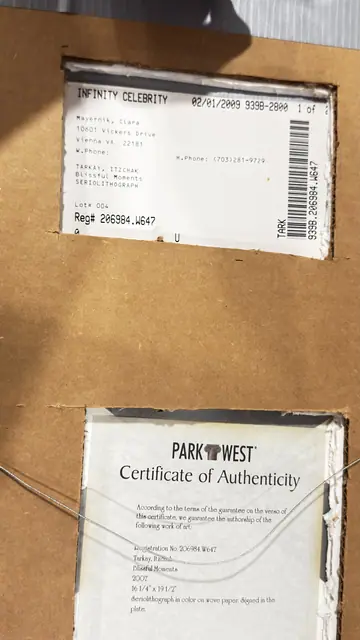

Paintings & Prints
Blissful Moments, Itzchak Tarkay Serigraph, Signed in the Plate, Framed, 2007
Itzchak Tarkay · 2007
Price Upon Request





About the Item
Itzchak Tarkay. A light, decorative cafe scene. Four women in patterned dress sit around a small round table set with fruit and a vase of blossom; a striped throw and a potted plant fill the right of the sheet. Line is quick and calligraphic, colour is laid in flat washes of rose, saffron and pale blue. Signed in the plate at the lower right. Wide cream mat in a slim dark frame. Medium: serigraph in colour on wove paper. Signed lower right, in the plate, reading "Tarkay". Edition: signed in the plate. Accompanied by a certificate: Certificate of Authenticity for Tarkay, Itzchak, Blissful Moments, 2007, serigraph in colour on wove paper, image 16 1/4 x 19 1/2 in, registration no 226984.W647. Inscribed on the reverse or mount: PARK WEST Certificate of Authenticity; Registration No 226984.W647; Tarkay, Itzchak; Blissful Moments. Condition: sheet clean; the certificate and its card mount are worn at the edges. Blissful Moments is a documented serigraph subject by Itzchak Tarkay, whose graphic editions were widely distributed with certificates through Park West Gallery.
About the Artist
Itzchak Tarkay (1935-2012) was an Israeli painter known for languid women in cafes and gardens, rendered in flat, glowing colour. His serigraphs and lithographs made him one of the most widely collected figurative artists of his generation.
Details
- Creator:
- Itzchak Tarkay
- Creation Year:
- 2007
- Dimensions:
- Height: 29.0 in (73.66 cm)
Width: 32.0 in (81.28 cm)
outside of frame - Medium:
- serigraph in colour on wove paper
- Edition:
- signed in the plate
- Period:
- 21St
- Condition:
- Offered in the condition shown in the photographs.
- Reference Number:
- VO-241
- Documentation:
- Certificate of Authenticity for Tarkay, Itzchak, Blissful Moments, 2007, serigraph in colour on wove paper, image 16 1/4 x 19 1/2 in, registration no 226984.W647
- Gallery Location:
- Park West Gallery, Delaware